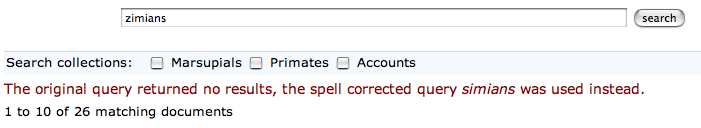

Flax Basic: Reference
Introduction
Flax Basic is a simple enterprise search system, designed to allow you to build searchable indexes of files on your PC, intranet or website. It is based on the Flax enterprise search solution platform developed by Lemur Consulting Ltd. and is an open-source application (i.e., the source code is freely downloadable). As such, Flax Basic can be downloaded and installed at no charge on as many computers as required.
Flax Basic builds a high-performance custom database of the documents you choose, and allows you to search them very quickly and accurately. Flax Basic can read documents in Microsoft Office format, web pages in HTML, Adobe Acrobat (PDF) documents and Rich Text Format (RTF) and automatically extract the text. Flax Basic also provides automatic query spelling correction and ranks results in order of relevance.
Unlike other products, Flax Basic does not put a limit on how many documents can be indexed and this is only limited by the amount of disk space and memory available. Flax Basic is controlled via a password-protected web page interface.
In the rest of this document, we refer to Flax Basic as simply "Flax".
System Requirements
Flax should run on a range of modern operating systems, including Windows, Mac OS X, Linux and other flavours of Unix. Lemur is currently concentrating on supporting Windows users. Users of other OSs can go to the Flax project page
http://code.google.com/p/flaxcode/
to download the source code. Note that this will require some technical experience.
In hardware terms, Flax requires a minimum of 1GB of RAM, and sufficient disk space to store any indexes created (as a rule of thumb, these will take up about as much space as the source data). The more memory is available, the faster Flax will run (for the same reason, avoid installing Flax on a machine that is already heavily loaded with other tasks).
Installation and Running
For installation, see the Getting Started document provided with the Windows distribution.
Web Proxies
When using Flax in conjunction with an existing web server (for example when adding search to a public web site), one of the simplest methods of integration is to configure the existing server as a reverse proxy. This means that the main web server will act as an intermediary between Flax and users, and Flax pages will appear to come from the main server. This also has the advantages of greater security and efficiency (due to caching static content etc.)
There are several proxy modules available for Microsoft IIS, including ISAPI_Rewrite (http://www.isapirewrite.com/ ). ISAPI-based modules are likely to be more efficient than .NET or ASP solutions. The Apache web server can be configured to act as a reverse proxy using the mod_proxy module (http://httpd.apache.org/docs/1.3/mod/mod_proxy.html ). For other web servers, consult your documentation.
Administrators
Logging in
The administration interface is accessed through Flax's /admin URL. For example, if you are running your browser on the same machine that Flax is running on, enter:
http://localhost:8090/admin
in your browser's address field. If this is a new session, you will then be prompted to enter the administration username and password.
Enter "admin" as the username, and the password you set when installing Flax (for instructions on how to change the password, see below.) Flax will then display the main collections list page.
Changing the Administration Password
On Windows
First, make sure Flax Basic is not running. If you installed Flax Basic as a Service, you can stop it by running the file
C:\Program Files\Flax Basic\stopflaxservice.bat
or if it is running in a command window then close that window. Then open a command window (Start, Run, cmd) and type:
cd "C:\Program files\Flax Basic" startflax --set-admin-password
Enter a new password and close the window, then restart the Flax Basic service if necessary by running the file
C:\Program Files\Flax Basic\startflaxservice.bat
Linux/Unix/MacOS
First stop the Flax process, if it is running. Then enter the following on the command line: (FIXME)
$ python startflax.py -d data --conf-dir=. --set-admin-password
You will then be prompted to enter and confirm a new password. After entering it, restart Flax as ususal.
Collections
A collection is a specification for a set of documents to index, together with parameters to control the indexing. A collection may be searched separately or together with other collections.
Collections are a convenient way to organise your indexes when there are clear differences in the types of source documents. One example is when you have a set of "reference" documents that are rarely updated, and "working" documents which are updated several times a day. In this case, organising each set as a separate collection allows the indexing to be scheduled more frequently for the working documents than the reference set, with better indexing efficiency.
Collections are also useful when you distinct sets of end users - for example, technical and marketing staff - who will generally only want to search documents in their own subject area. This leads to better, faster searches.
Creating a Collection
The Collections page is accessed by clicking the Collections link in the menu bar at the top of the page. When you run Flax for the first time, the collections list will be empty.

To create a new collection, click the Create a new collection link. This takes you to the collection details page, with blank fields. The fields are arranged in four sections:
Document Collection
This section has two fields, Name and Description. The first is a short name which is used by Flax as a label for the collection, and is required. The description is optional, and can be of any length.
Files Specification
This section controls which files will be included in the collection. Currently, Flax can only index files on file systems attached to the computer running Flax, including network file systems/shared folders (other access methods will be added in a later release of Flax.)
Each collection requires one or more Path fields, which specifies the parent directory which will be scanned for files. Subdirectories will also be scanned recursively. If you want to specify more than one path, click the Add another path button. Path fields can be left blank to be omitted from the collection, so long as at least one has a value.
Each Path has a corresponding Mapping field, which is used to generate URLs for search result objects. Files are not served directly through Flax - mostly as this could be used to circumvent any access restrictions implemented through the file system or other means. Any value in the mapping field will replace the path prefix in the generated URL.
Flax is generally intended to work alongside an existing web server, ideally using it as a proxy (see above), and using it to serve documents from Flax's search results page. For example, using the main web server as a proxy, if documents from the folder C:\foo\bar\recipes is served as the URL /main/recipes, then you should enter:
Path: C:\foo\bar\recipes Mapping: /main/recipes
If the main web server is not being used as a proxy for Flax, you should enter a fully-qualified URL which specifies the server, e.g.:
Path: C:\foo\bar\recipes Mapping: http://www.netveggie.foo/main/recipes
You can also serve indexed files directly from Flax, by entering "FLAX" (upper-case) into the Mapping field (for each Path if there is more than one.) This is not likely to be as efficient as a dedicated web server. Also note that Flax will ignore any user access restrictions to files. For these reasons, we advise against using this function for a public web site or in a security-critical application.
The Formats list allows you to choose file types to be included in the index. If you leave all unselected, Flax will index all file types.
Finally, the Age field lets you exclude files with a modification time greater than the period selected. When re-indexing a collection, any files that now exceed the Age field (if set) will be removed.
Indexing Options
Options controlling the way files are indexed. Currently, this is just a language selection, which controls the stemming, or suffix-stripping, of indexed words. This technique improves searching by normalising inflected forms of words, so that, for example, "cycle" would match "cycled", "cycling", "cycles" etc. Since this is a language-dependent feature, the main language of a collection should be chosen if stemming is to be used.
If you have documents in several different languages, you can either index and search them as separate collections, with the language field set accordingly, or index them all with language set to None, in which case stemming will not be performed.
Scheduling
Indexing can be initiated manually (see below) or at automatically at scheduled times (the Flax service must be running for this to work.) Scheduling works by matching the current time, once per minute, against the scheduling specification of a collection (if set). If all of the fields (Minutes, Hours, Weekdays, Monthdays and Months) matches the current time then the collection is scheduled for indexing. A blank field will never match, ensuring that no scheduled indexing will be performed if any field is blank. The "*" wildcard matches any value. Otherwise, the scheduler expects a comma-delimeted list of integers.
For example, to schedule reindexing on the hour, every day, enter:
Minutes: 0 Hours: * Weekdays: * Monthdays: * Months: * To reindex at 3.30am every weekday (Mondays are 0, Sundays are 6):
Minutes: 30 Hours: 3 Weekdays: 0, 1, 2, 3, 4 Monthdays: * Months: *
After entering details for the new collection, click the Apply button at the bottom of the page. Flax will create the new collection and return you to the collections list.
Indexing a Collection
Before searching a collection, it must be indexed. This scans all the documents defined by the collection, extracts text from them, and creates a index on disk for optimised searching. Flax will only index one collection at a time, as this is the most efficient use of machine resources. More than one collection may be due for indexing, in which case they will be indexed in an arbitrary order. This may be controlled, where necessary, with the manual controls described below.
Unscheduled Indexing
To index a collection immediately, assuming no other collections are being indexed, click the Start button in the Indexing column of the collections list. The button text will change to In progress and the information columns will update as the indexing progresses:
Docs: is the number of indexed documents in the collection. Files: is the number of files processed on the indexing run. Errors: is the number of files that failed to be indexed due to errors. When the indexing completes, the button text will change back to Start.
Scheduled Indexing
Scheduled indexing is defined with the Collection Details fields described above. When a scheduled time arrives, indexing will become due for the collection, and it will be indexed when the indexer is free (or immediately if no other indexing is taking place). The collections list display will update in the same way as for unscheduled indexing.
Holding Indexing
It is possible to hold a collection, which means that indexing is not started when it becomes due, either scheduled or unscheduled. To do this, click the Hold button in the collections list. The button text will change to Unhold, allowing the collection hold to be released when you decide. If a collection is already being indexed when held, it will be re-indexed from the start when it becomes unheld.
Holding a collection could be useful when making significant changes to a set of documents (such as adding a large number from an archive) as it means indexing can be postponed until all changes are made. It also allows you to immediately index a collection even if other collections are currently being indexed - just put the other collections on hold.
Editing and Deleting a Collection
Any collection details (description, file specifications, indexing options, scheduling - everything apart from name) may be changed by clicking the collection name in the collections list. This opens the Collection Details page, where changes may be made and saved by clicking the Apply button. Changes to the file specifications and indexing options will not be reflected in the collection index until it is re-indexed.
To permanently delete a collection, click the delete icon (a red X) in the collections list. You will be asked to confirm before Flax deletes the collection.
Searching
When logged in as administrator, you have access to the same simple and advanced search pages as normal users, with the addition of the administration menu bar at the top of the page. The search pages are accessed by clicking Search or Advanced Search. See below for full descriptions.
Options
This page allows you to set global options for the Flax application. Currently, these are limited to logging options, which allow you to control the level of logging for various classes of events:
collections: additions, changes and deletions to collections filtering: extraction of indexable text from collection files indexing: updates to searchable indexes scheduling: scheduled changes to a collection's indexable state searching: logging of user search events webserver: events from Flax's built-in web server
There is also a Default setting, which allows you to set a logging level for all event classes that are set to "Default". The logging levels are:
Debug: The most verbose and detailed output, intended to help with application debugging. Info: Less verbose than Debug, but includes all "standard" events. Warning: Only logs warning messages. Error: Only logs error messages (more serious than Warning). Critical: Only logs the most serious class of error.
For general use we advice logging all event classes at a level of Info or Warning. As installed, Flax is set up to do the latter.
Logging
Flax writes log files into the logs` subdirectory of your Flax ``data directory. The current log file is called flax.log. Older log files are labeled with the extensions ".1", ".2" etc, each file being older than the previous. Flax will roll over the log file when it reaches 10MB in size. It will also delete the oldest log file if the total number exceeds 10 (this is configurable).
Logged events are written in the following format:
<date> <time>: <LEVEL>: <message>
e.g.:
2007-11-20 14:39:21,638: INFO: Checking collections for (re-)indexing
At 14:29 and 21.638s on 20th November 2007 an INFO level event occurred; the scheduler checked all collections to check whether any were due for indexing.
Logging is fully configurable (beyond the event level options described above) by editing the file flaxlog.conf in your configuration directory (C:\Program Files\Flax Basic\conf on Windows, if that's where you installed Flax). This uses the standard Python logging configuration format. For details, see:
http://docs.python.org/lib/logging-config-fileformat.html
Users
The standard user interface is accessed from Flax's root page; e.g., on the installation machine, browse to:
http://localhost:8090/
The standard interface provides three pages, accessible from the menu at the top right of the page. Simple and Advanced Search are described below. The third page, About Flax, has information about Flax, with external links to relation web sites.
Simple Search
This page provides a simple search over all or any of the document collections. Flax will find documents which contain all the words entered in the search input, and return a list ordered by relevance.
Each search result is comprised of the document title (if available - otherwise the filename is used), a highlighted summary of the document text, and the document size and modification time. The title is hyperlinked to the document itself, using the mapping mechanism set up in the collection details. If there are more than 10 matching documents, use the links at the bottom of the list to page through the results.

Each search result has a link Find similar documents on the bottom information line. Clicking this will display documents on the same or related topics to the original document, ranked from most to least similar, which can be paged through in the same way as search results. Click Search or Advanced Search in the top menu bar to return.
If there is only one collection in Flax, all searches will be over this collection. Otherwise you have the option to select which collections to search. Leave all the checkboxes unchecked to search over all (this is the same as checking all of them), or select the ones you want to search.

When the search box is empty, Flax will display collection descriptions, with the indexed document count for each. If there are no documents, a warning will also be displayed.

Spelling correction
If a search returns no results, Flax will attempt to correct the spelling of any words in the query that appear to be misspelled, by searching the index for the nearest match to the word. If it finds a query that returns results, it will display these results along with a warning message that the query has been spell-corrected.
Advanced Search
This page is accessed from the Advanced Search link in the top menu. It is similar to the basic search page (the main search box will still match all words entered) but adds three new optional fields to the search. These can be used together or alone:
Exact Phrase: matches text exactly as entered. Without the words: excludes any words entered here from the results. Formats: if any of the formats are selected, results will be restricted to files with those formats.
Searching with Syntax
It is possible to replicate most of the Advanced Search facilities using just the Simple Search page, by adding a bit of syntax to the query. For example to search for an exact phrase, use double quotes around the phrase, eg:
"public sector"
to exclude words from a query, preface them with a '-' (minus) character. Note that this only works if there are other, non-negative words in the query:
"public sector" -transport
returns all documents which include the phrase "public sector" but not the word "transport". It is also possible to add optional words or phrases to the query using the OR operator:
nurse OR doctor OR teacher
returns documents containing any of these words. Finally, you can use these query types together, optionally using parentheses to group terms together:
("public sector" OR "local authority") -transport (nurse OR doctor OR teacher)
finds documents containing the phrase "public sector" or "local authority" but not the word "transport", and also the word "nurse", "doctor" or "teacher".
Changing the Inteface Look & Feel
Flax's HTML interface is generated from template files located in the templates subdirectory of the installation (e.g. C:\Program Files\Flax Basic\templates). You can modify these files to change the appearance and behaviour of the interface. The files are:
- flax.html
- This template defines the basic structure of all Flax pages. It has a banner element which is substituted with either the admin or user banner files, depending on the mode that Flax is being accessed in. The main content of the page is taken from one of the non-banner files listed below. These may also override the page title, and insert elements into the <head> element.
- admin_banner.html
- The top element common to all pages viewed by administrators, which displays the Flax logo and a menu of links.
- user_banner.html
- The top element common to all pages viewed by normal users, displaying the Flax logo and a menu of links.
- search.html
- Both the simple and advanced variant of search page (the advanced elements are contained in <div> which is suppressed for simple searches).
- collections.html
- The list of collections in Flax, with indexing controls.
- collection_detail.html
- Details for an existing or new collection.
- options.html
- Global options (currently just logging).
- about.html
- Information about Flax, Xapian, and Lemur Consulting.
These files are standard HTML, except that certain elements are tagged with the node attribute. This is used by Flax's template engine to insert or modify elements. You can change the HTML in any way, but these node elements must be retained, and have the same nested structure that they currently do.
A great deal of customisation could be carried out without modifying the HTML templates. Flax uses CSS (Cascading Style Sheets) to define the style of pages. This is specified in one file, main.css, in the static\css folder (e.g. C:\Program Files\Flax Basic\static), and may be modified to customise the pages. There are also images in the static\img folder which may be replaced with your own variants.
Troubleshooting
There is a Frequently Asked Questions (FAQ) file available for Windows which may also contain useful information for users running other operating systems. This file is available at http://code.google.com/p/flaxcode/w/list .